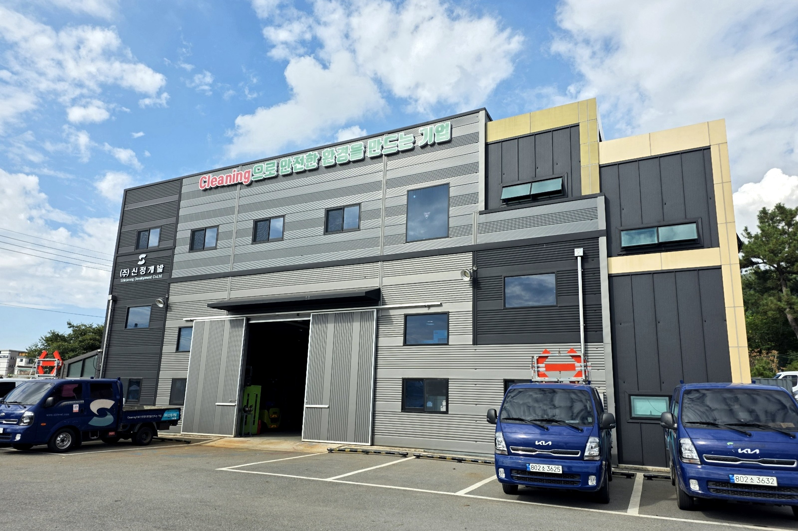
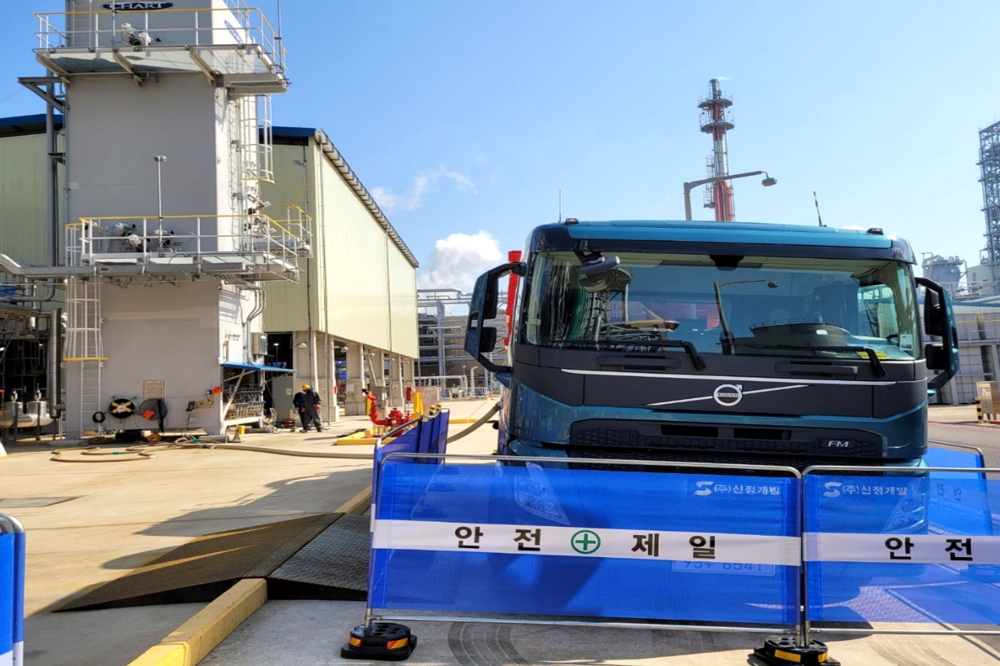
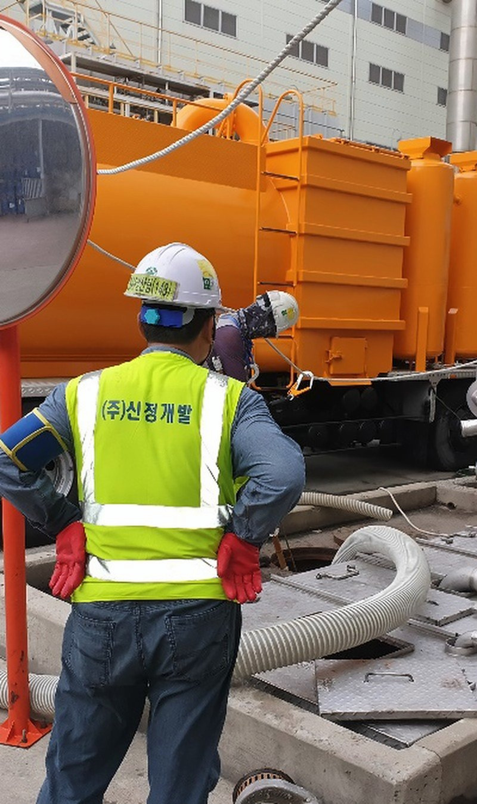
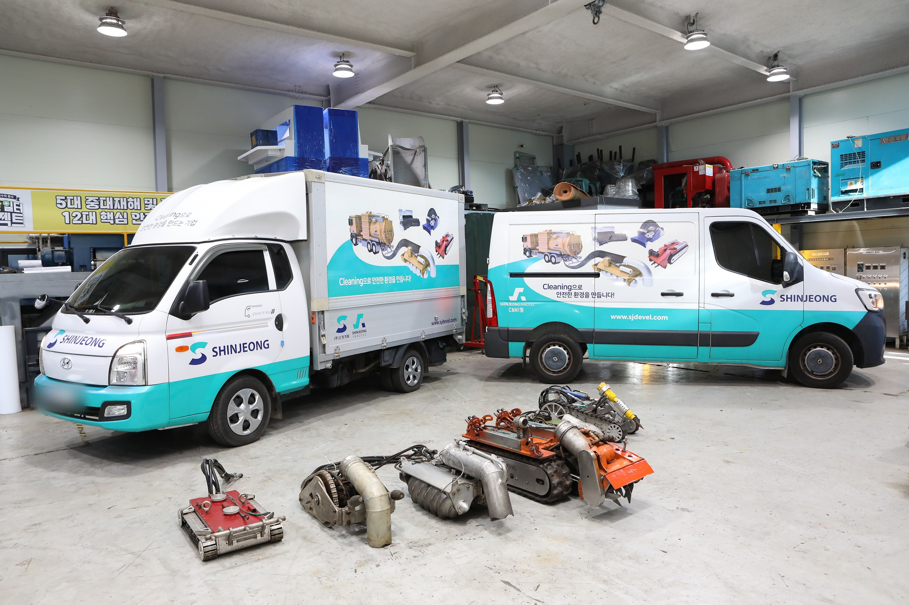
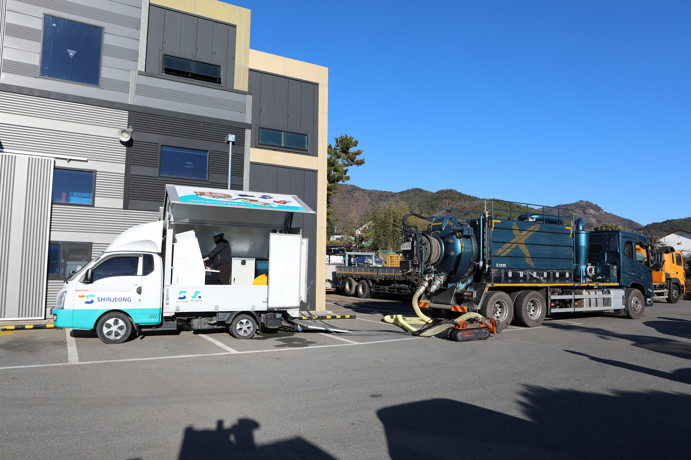

회사 소개 인사말
변함없는 노력과 연구개발로
Cleaning분야의 최고의 기업이 되겠습니다.
저희 회사는 1992년 설립 이후 풍부한 현장경험과 숙련된 직원들의 일치된 노력으로 UTILITY환경분야 유지보수전문업체로서의 역할에 최선을 다하는 마음가짐으로 공사를 수행하고 있습니다.
그 동안 수많은 토목, 건설현장 및 산업체의 검사, 시공, 운영분야에서 어려웠던 여건을 극복하고 성장하게 되었습니다.
그 결과 성능이 우수한 많은 장비와 다양화된 고급기술을 보유하게 됨과 동시에 산학협력을 통한 발전성 있는 미래지향적인 첨단환경업체로서 발전해 나아가고 있습니다.
앞으로 우리 (주)신정개발은 작업방법의 개선과 환경.안전.보건에 주력하여 공사의 질을 높이고, 더 큰 만족을 드리며, 기업의 사회적 소명을 다하기 위해 끊임없는 노력을 기울일 것을 약속 드립니다.
주식회사 신정개발 대표이사
- 설립
- 1992년
- 법인 전환
- 2007년
- 기업부설연구소
- 2017년
- 수행 실적 2020~2023
- 170여 건
- 등록 특허
- 8건
걸어온 길
1992년 신학상사로 출발했습니다
1995년 신정개발로 상호를 바꾸고, 2007년 법인으로 전환했습니다. 굵은 점은 주요 연혁입니다.
- 1992
- 3월신학상사 설립
- 1995
- 10월상호 변경 — 신정개발
- 2000
- 4월저수조청소업 등록
- 2002
- 3월상·하수도 설비시공업 면허 취득
- 2004
- 10월일반폐기물 수집·운반 면허 취득
- 2006
- 5월지정폐기물 수집·운반 면허 취득
- 2007
- 9월법인 전환 — ㈜신정개발
- 10월환경부장관상 수상
- 2009
- 3월난방시공업 1종 면허 취득
- 2012
- 12월자본금 3억 원 증자
- 2015
- 9월기계설비공사업 면허 취득
- 2016
- 5월KOSHA 18001 인증
- 2017
- 5월ISO 14001 인증
- 6월전남형 강소기업 인증
- 7월경영혁신형 중소기업 인증 (MAINBIZ)
- 11월기업부설연구소 설립
- 2018
- 7월서비스분야 안전보건활동 우수사례 대상
- 7월위험성평가 인증 — 산업안전보건공단
- 2020
- 11월중소기업 경영혁신 공모전 우수상
- 11월지역사회 공헌 인정기업 승인
- 12월기술혁신형 중소기업 인증 (INNOBIZ)
- 2021
- 11월표창장 — 산업통상자원부
- 2023
- 5월신용등급 우수기업 인증 (신용등급 BBB-)

하는 일
산업설비와 환경시설을 다루는
다섯 가지 업무
설비 유지보수, 촉매·충진물 작업, 준설과 시설 조사·보수를 해 왔습니다. 분야마다 작업 방식과 장비를 소개합니다.
수행 실적2020~2023년 170여 건적용 사례 보기회사 자료
홈페이지 공개용으로 일부 쪽을 뺀 파일입니다.
인증 · 특허
인증서와 특허증,
원본으로 확인하세요
인증서 · 확인서 8가지와 등록 특허 8건을 원본 그대로 보여 드립니다.
인증서 8
품질 · 환경 · 안전보건 · 기업 인증
특허증 8
등록 8건 · 이 밖에 출원 4건
인증서 사진은 2024년 자료 그대로이며, 유효 기간과 갱신 여부는 상담 시 안내합니다 · 대표자 이름과 발명자 개인 정보는 가렸습니다.
면허 · 허가 · 등록 6종
- 상·하수도설비공사업
- 난방시공업 제1종
- 기계설비공사업
- 일반폐기물 수집·운반업 허가
- 지정폐기물 수집·운반업 허가
- 저수조청소업 등록
수상 4회
- 2007환경부장관상
- 2018서비스분야 안전보건활동 우수사례 대상
- 2020중소기업 경영혁신 공모전 우수상
- 2021산업통상자원부 표창

사람과 조직
조직과 기술 인력
대표이사 아래 경영지원팀 · 안전 · 공무 · 기업부설연구소와 C&M · C&S · SAP 다섯 개 팀이 있습니다.
무인 솔루션 페이지에 모아 두었습니다2017년 11월 설립 · 한국산업기술진흥협회 인정 · 벤처기업 확인유형 ‘연구개발유형’
보유 기술자격 6개 분야
- 안전·위험물산업안전기사 · 산업안전산업기사 · 위험물산업기사
- 토목·기계토목기사 · 토목 중급/초급기술자 · 기계 중급기술자
- 가스·난방가스시설시공관리자 · 난방시공업 인정기능사
- 용접·설비보전용접기능사 · 특수용접기능사 · 설비보전기능사
- 분석·시험·전기화학분석기능사 · 건설재료시험기능사 · 전기기능사
- 건설기계 운전굴삭기운전기능사 · 지게차운전기능사 · 건설기계조종사

보유 장비
분야마다 쓰는 장비를
갖추고 있습니다
분야별 장비의 규격 · 용도 · 보유 대수는 각 분야 페이지에서 보실 수 있습니다.
- 01설비 클리닝진공흡입차 · 고압 JET-CLEANER · 흡입 로봇 · 제어 차량장비 6종
- 02촉매·충진물 작업진공흡입차(건식) · AUTO SEPARATOR · 선별기 · 집진기 · 흡입 로봇장비 6종
- 03화학세정화학세정용 내산장비장비 1종
- 04준설·슬러지 회수무인준설로봇 · 무인로더 · 스키드 로더 · 데칸타 · 소형 굴삭기장비 11종
- 05관로·지하 조사 및 보수CCTV 조사차량 · 관로 CCTV 로봇 · 탈취제거 SYSTEM · 스키드 로더장비 4종
공통 장비 운반 · 지원
| 장비 | 규격 | 용도 | 보유 |
|---|---|---|---|
| 카고크레인 | 5톤 | 자재 운반 | 1대 |
| 지게차 | 3톤 외 | 자재 운반 | 8대 |
| 고압 살수차 | 8.5톤 | 노면 청소 | 1대 |
| HYDRONIC PUMP | — | 자재 운반 | 1SET |
보유 대수는 회사소개서(2024) 수록 기준이며, 현재 수량과 가동 상태는 문의 시 안내합니다.

오시는 길 · 연락처
여수 본사 · 서산 지사
- 회사명
- (주)신정개발 SHINJEONG DEVELOPMENT CO., LTD.
- 대표 전화
- 061-682-5537
- 문의 가능 시간
- 09:00 ~ 17:30
- 팩스
- 061-683-5567
현장 문의
작업이 필요한 설비와 일정을 알려 주세요.